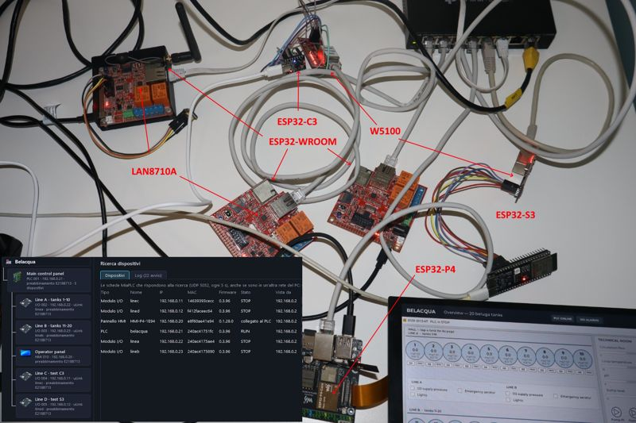

Galleria
Dal banco di prova
Le foto delle schede vere su cui MiaPLC viene provato ogni giorno. Per ogni foto: cosa si vede e quali prove ci abbiamo fatto. Sono prototipi da laboratorio: nessuna scheda MiaPLC è ancora in circolazione.

Cosa si vede
È l'impianto dell'esempio Belacqua (l'allevamento di storioni), montato sul tavolo invece che in un quadro elettrico. Ogni scheda ha un compito, come in un impianto vero:
- Il PLC (ESP32 con Ethernet LAN8710A): fa girare il programma ladder dell'allevamento
- I moduli di ingressi e uscite (ESP32-WROOM, ESP32-C3 con Ethernet W5100, ESP32-S3): leggono sensori e comandano le uscite e parlano col PLC via µLink
- Il pannello touch (ESP32-P4, in basso a destra): mostra le 20 vasche, gli allarmi e i grafici
- Lo switch di rete (in alto): una rete dedicata, senza altro traffico, come si fa negli impianti
- Il PC con MiaConfig (in basso a sinistra): trova da solo tutte le schede sulla rete, con nome, firmware e stato RUN / STOP
Schede diverse apposta: se il programma gira bene su un ESP32 piccolo e su un C3 economico, gira bene anche sulle schede più grandi.
Le prove più importanti fatte qui
0,92 msper far girare 1000 network ladder sull'ESP32: il programma si ripete più di 1000 volte al secondo
~3 msil giro del programma vero di Belacqua (369 network) col PLC in RUN, senza mai sforare il tempo
50 su 50prove di sicurezza superate su 6 schede: password, firme, accessi non permessi rifiutati
~1,1 msandata e ritorno fra PLC e un modulo, con ogni messaggio firmato
- Velocità del PLC. Programmi da 1 a 1000 network, cronometrati dal PLC stesso. I numeri completi sono nella pagina Prestazioni.
- Un impianto completo in RUN. Il programma di Belacqua gira senza sforare il tempo ciclo, anche mentre il PC scarica programmi o guarda l'Online.
- Sicurezza. Ogni scheda ha la sua password; il firmware e il programma vengono accettati solo se firmati con la chiave del progetto. Le schede del banco hanno superato 50 prove su 50 (09–10 novembre 2026), il pannello 12 su 12.
- µLink firmato. PLC e moduli si scambiano gli ingressi e le uscite ogni 5 ms con ogni messaggio firmato: meno di 1 messaggio perso su 900 sulle schede con Ethernet, e il PLC non ha mai sforato il tempo.
- Quanto costa l'HTTPS. Una connessione cifrata chiede 35–40 KB di RAM nel momento peggiore: sull'ESP32 senza memoria esterna (PSRAM) è troppo. Per questo l'HTTPS sarà di serie sulle schede con PSRAM, a partire dal P4.
I dettagli per chi lavora già con i PLC
- Rete: switch dedicato, PLC 192.168.0.21, moduli µLink su Ethernet (EtherType 0x88B5, solo livello 2), pannello collegato al PLC su TCP 5050.
- Ciclo di Belacqua (carico ~74 %): scansione media 2,93 ms, periodo medio 3,96 ms, 0 overrun anche con 10 strette di mano TLS da 48 KB durante il RUN.
- µLink protocollo 2 con firma CMAC a 5 ms: 0,007–0,11 % di risposte perse sulle EVB, andata e ritorno 1,06 ms (circa 0,42 ms sono firme e controlli). Sul C3 e sull'S3 a 5 ms l'1–7 % delle risposte arriva in ritardo (3,2–3,8 ms): per loro conviene un periodo più lungo.
- TLS 1.2 con ECDSA P-256 su ESP32 senza PSRAM: stretta di mano ~0,7 s, costo 35–40 KB di RAM, flash +119 KB. Due connessioni insieme non ci stanno.
- Cosa resta da fare, scritto senza giri di parole: durante un Download lo scambio µLink si ferma per un momento (fino a 0,8 s), le prove contro gli attacchi in rete vanno ancora fatte, il ritorno automatico al firmware precedente sul PLC non c'è ancora.